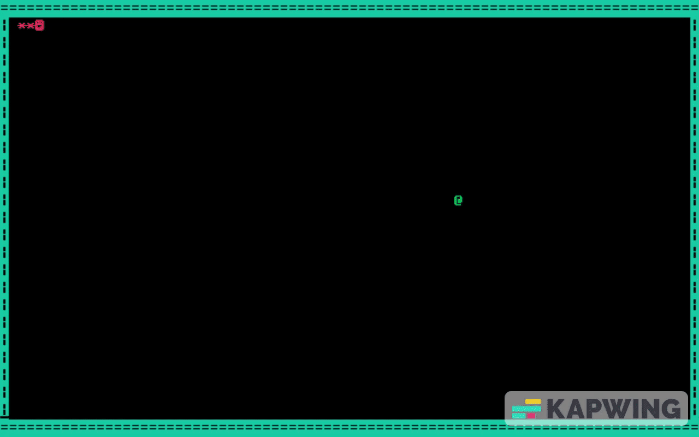

A fully playable, classic Snake game developed from scratch using x86 Assembly language and running on the EMU8086 emulator.

Building this game required direct interaction with the system's hardware. Instead of relying on high-level game engines, I utilized low-level BIOS and DOS interrupts to control the screen, capture keystrokes, and manage the game loop.
10h to clear the screen, draw the game borders manually using ASCII characters, and position the cursor.16h for asynchronous keyboard polling to change the snake's direction seamlessly without pausing the game loop.To keep the snake moving constantly, the game checks the Zero Flag to see if a key was pressed. If not, it skips the input phase and continues the game loop.
; Check for user input using BIOS Int 16h mov ah, 01h ; 01h checks the keyboard buffer int 16h jz move ; If no key was pressed (Zero Flag = 1), keep moving mov ah, 00h ; 00h retrieves the actual keystroke int 16h cmp al, 'a' ; Check for 'A' (Left) je left cmp al, 's' ; Check for 'S' (Right) je right
Because 8086 Assembly lacks built-in random number generators, I engineered a deterministic workaround using coordinate arrays to spawn food dynamically across the map.
generate_food:
mov di, fdindx ; Load the current array index
mov al, fdlistcol[di] ; Fetch predefined X coordinate
mov fdc, al
mov al, fdlistrow[di] ; Fetch predefined Y coordinate
mov fdr, al
inc fdindx ; Move to the next index for next time
cmp fdindx, 5 ; If we reach the end of the array (5 items)
jne done_gen
mov fdindx, 0 ; Reset index back to 0
done_gen:
ret